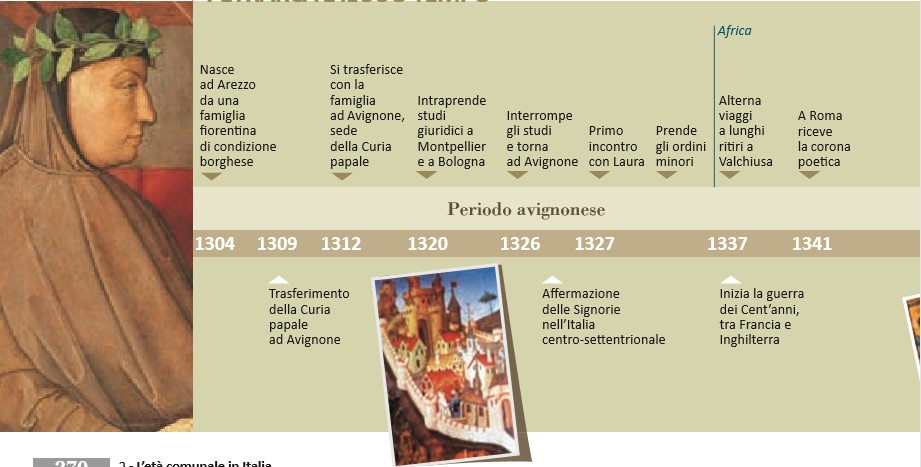
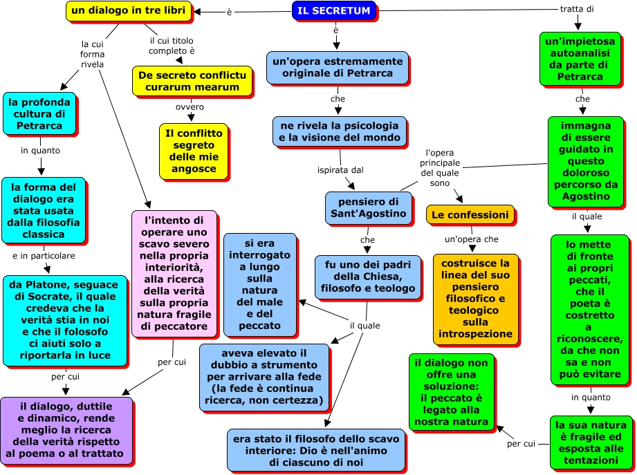

Francesco Petrarca è nato ad Arezzo il 20 luglio 1304 e morto ad Arquà il 19 luglio 1374. Scrittore, poeta ed umanista ha svolto un ruolo molto importante per lo sviluppo della poesia italiana in volgare, anche se si considerava prevalentemente un autore di lingua latina. Figlio di un notaio fiorentino, Ser Petracco, esiliato per motivi politici, fin da piccolo Petrarca è stato costretto a seguire i vari spostamenti del padre, prima in altre città toscane e poi ad Avignone, in Francia. Ha trascorso l'infanzia tra Incisa, Arezzo e Pisa e dal 1311 si è trasferito a Carpentras, vicino ad Avignone. Nei confronti della città francese, Petrarca ha nutrito negli anni una assoluta indifferenza, che si è successivamente trasformata in odio, per il luogo ed il tipo di vita al quale lo costringeva il potere politico espresso dalla curia papale.
È la più interessante fra le opere latine e anche quella che esprime maggiormente l'ansia interiore e la lacerazione dell'autore, incapace di scegliere tra gli allettamenti del mondo (incluso l'amore per Laura) e la dedizione a una vita di elevazione spirituale: composto tra 1342-1343 e in seguito più volte rielaborato, si tratta propriamente di un dialogo tra Francesco e S. Agostino alla presenza muta della Verità, che nella finzione è colei che invita il santo a intervenire in soccorso dell'autore smarrito nel peccato, con un vago riferimento alla struttura allegorica della Commedia di Dante; il titolo completo è De secreto conflictu curarum mearum e l'opera è divisa in tre libri, che corrispondono alle tre giornate in cui si immagina che avvenga il dialogo. L'opera riflette gli interessi classici e pre-umanisti di Petrarca, in quanto la struttura riprende quella di molti dialoghi di Cicerone (soprattutto il Laelius de amicitia, più volte citato nell'opera) e il libro è fitto di richiami alla cultura antica, anche se ovviamente una delle fonti sono le Confessioni di S. Agostino che Petrarca molto amava e da cui ha tratto la scelta del suo interlocutore. Infatti Agostino svolge la parte del "confessore" e rimprovera a Francesco la sua debolezza e i peccati di cui si macchia, specie la mancanza di volontà che gli impedisce di abbandonare i beni terreni per dedicarsi al servizio di Dio (questo nel primo libro); nel secondo libro viene messo l'accento sull'accidia dell'autore, ovvero la sua sfiducia e inerzia morale che ostacolano il suo cammino sulla strada del bene; nel terzo libro, infine, viene posto sotto accusa l'amore peccaminoso di Francesco per Laura, vista come donna terrena che con la sua bellezza distoglie l'autore dalla ricerca della virtù, mentre l'amore dell'uomo per lei è condannato in quanto rivolto alla sua bellezza fisica e non alla sua anima. Nel dialogo è interessante l'atteggiamento di Petrarca, che inizialmente cerca sempre di controbattere alle accuse di Agostino con argomenti via via meno convincenti e infine, incalzato dal suo interlocutore, è costretto ad ammettere a malincuore le proprie colpe, mentre il libro non ha una vera conclusione e rimane "aperto", poiché Francesco riconosce tutte le sue mancanze ma confessa di non essere in grado di rinunciare ai mortalia negotia, ovvero alla ricerca della fama mondana e, soprattutto, all'amore per la propria donna.

I Rerum vulgarium fragmenta ("Frammenti di cose volgari") sono una raccolta di 366 liriche di Francesco Petrarca scritte nell'arco di tutta la vita e messe insieme nella forma definitiva negli ultimi anni prima della morte, approssimativamente tra il 1336 e il 1373-74. L'opera è anche impropriamente intitolata Canzoniere e, a differenza della Vita nuova di Dante, non ha una cornice narrativa in prosa ma presenta una successione di poesie, tradizionalmente divise tra quelle In vita di Laura e quelle In morte di Laura.
L'amore per Laura è il tema dominante della raccolta, ma non mancano altri argomenti come la critica alla corruzione della Curia papale di Avignone, la politica del tempo, mentre alcuni componimenti sono d'occasione e dedicati ad amici e potenti protettori del poeta. L'ordine di pubblicazione delle poesie non rispecchia quello di composizione e infatti il sonetto di apertura è stato certamente scritto tra gli ultimi, quando Laura era già morta e l'autore considera in maniera retrospettiva la sua vita sprecata nell'amore non corrisposto della donna. Il titolo originale alludeva alla scarsa considerazione che l'autore riponeva in quest'opera, da lui giudicata inferiore agli scritti latini da cui si attendeva la fama, infatti le liriche vengono definite anche nugae, "cose di poco conto" (tale giudizio apparentemente svalutante è probabilmente di maniera e contrasta con l'impegno profuso da Petrarca nel continuo lavoro di rimaneggiamento della raccolta).
L'opera è comunque il capolavoro riconosciuto del poeta ed è considerata come la prima raccolta lirica della poesia "moderna", con una rappresentazione dell'amore basata molto sull'interiorità dell'autore e con una descrizione della donna amata come creatura terrena, con difetti e soggetta all'invecchiamento, molto lontana quindi dalla idealizzazione propria dello Stilnovo.
Voi ch’ascoltate in rime sparse il suono
di quei sospiri ond’io nudriva ’l core
in sul mio primo giovenile errore
quand’era in parte altr’uom da quel ch’i’ sono,
del vario stile in ch’io piango et ragiono
fra le vane speranze e ’l van dolore,
ove sia chi per prova intenda amore,
spero trovar pietà, nonché perdono.
Ma ben veggio or sì come al popol tutto
favola fui gran tempo, onde sovente
di me medesmo meco mi vergogno;
et del mio vaneggiar vergogna è ’l frutto,
e ’l pentersi, e ’l conoscer chiaramente
che quanto piace al mondo è breve sogno.
O voi che ascoltate in queste poesie sparse il suono di quei
sospiri [d'amore] di cui io nutrivo il mio cuore durante il mio
vaneggiare giovanile, quando ero in parte un uomo diverso da
quello che sono oggi,
se fra voi c'è chi comprende l'amore per esperienza, spero di
trovare pietà e perdono per lo stile vario in cui piango e parlo,
fra le speranze e il dolore vano.
Ma ora capisco bene come per molto tempo io fui oggetto di
derisione per tutto il popolo, cosa di cui spesso mi vergogno con
me stesso;
e il frutto del mio vaneggiare [del mio amore infelice] è
la vergogna, e il capire chiaramente che tutto ciò che piace al
mondo è un sogno fugace.
Libro di testo: L'ATTUALITA' DELLA LETTERATURA
YOUTUBE
WIKIPEDIA
LETTERATURA ITALIANA